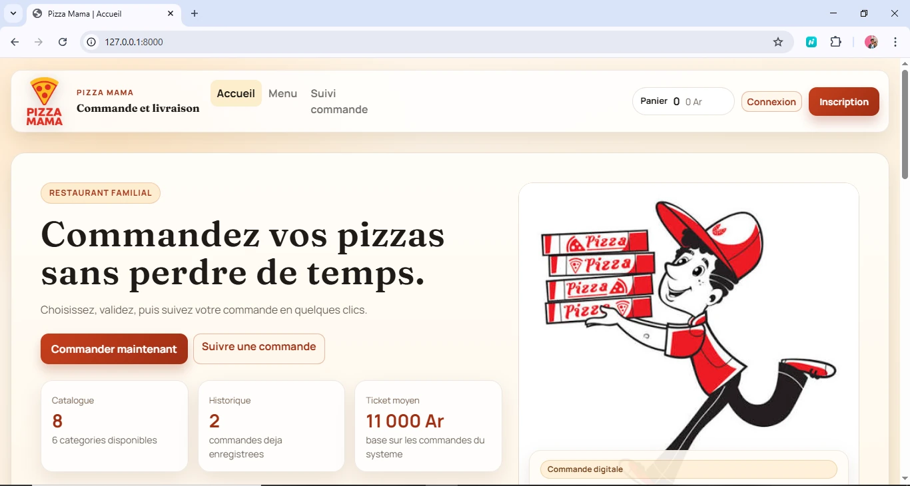
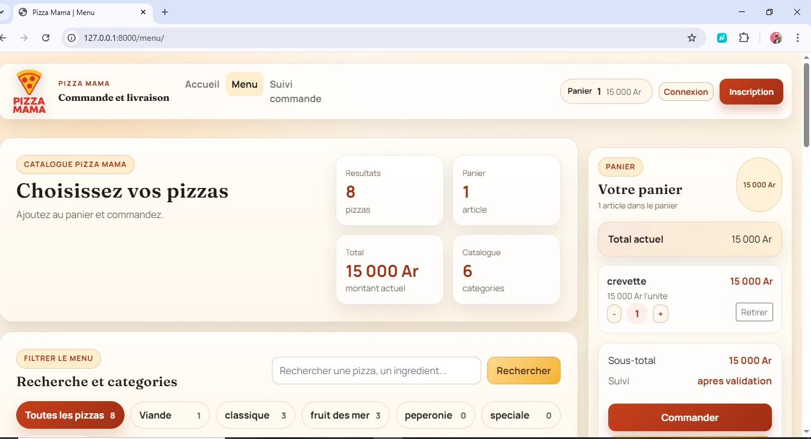
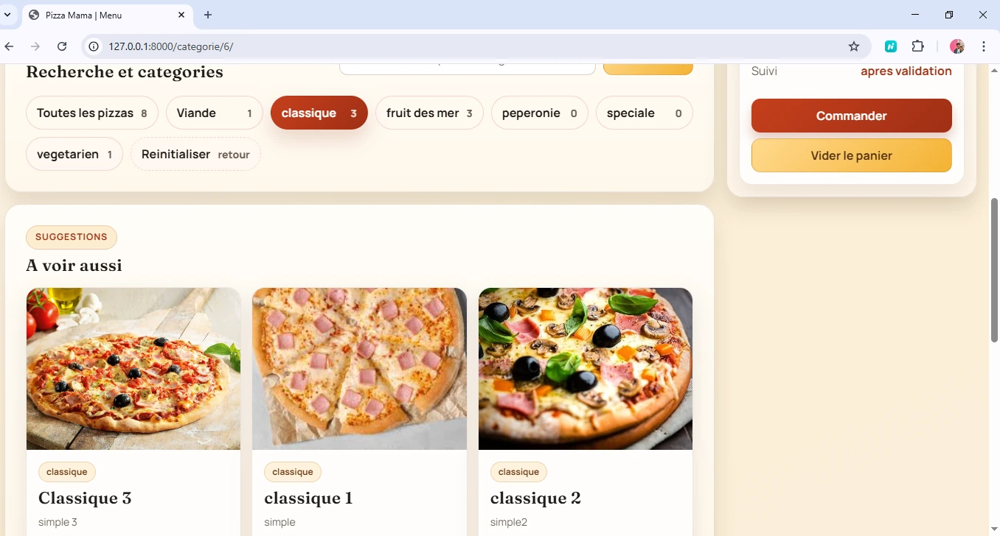
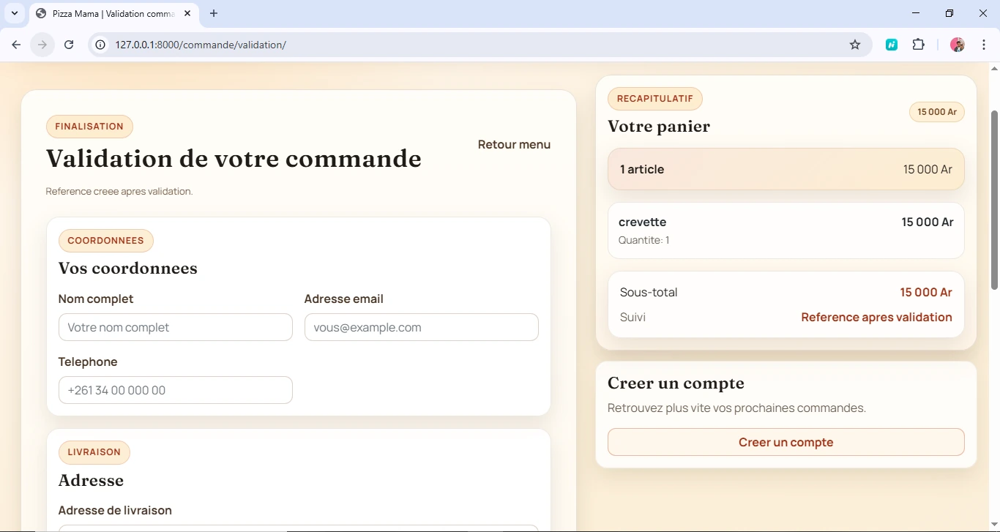
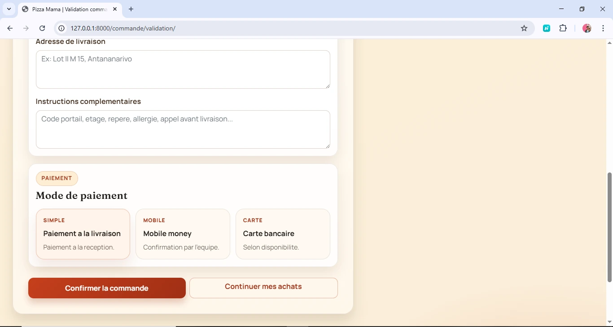
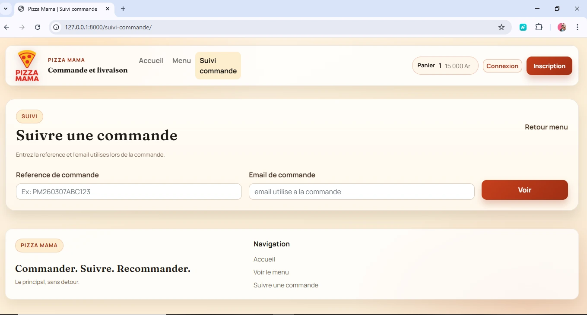

Étude de cas
Site de commande pour restaurant
Un projet pensé pour rendre un restaurant plus visible, permettre la commande en ligne et laisser au client la main sur son menu via une administration simple.
Informations rapides
- Type de projet
- Projet client dans la restauration
- Mon rôle
- Information à compléter
- Durée
- Information à compléter
- Statut
- Information à compléter
- Technologies
- HTML, CSS, Django et Python
Contexte
Ce projet a été réalisé pour un client dans la restauration. Le besoin était double : gagner en visibilité sur le web et proposer un système de commande accessible aux visiteurs. Le client étant novice en matière d'outils numériques, l'administration devait rester directe et facile à prendre en main.
Problème rencontré
Construire une expérience simple pour les clients tout en donnant au restaurateur une véritable autonomie dans la gestion du contenu.
Mon rôle
Information à compléter
Solution
Un site web avec présentation du menu, parcours de commande et interface d'administration sur mesure sous Django.
Technologies
HTML, CSS, Django et Python pour relier le frontend, les données et l'administration.
Fonctionnement
Le site relie un parcours public de consultation et de commande à une interface d'administration Django utilisée pour gérer le menu et les commandes.
Fonctionnalités principales
- Une page d'accueil claire pour présenter le restaurant et son offre.
- Un affichage du menu avec des catégories, des pizzas et des détails produits bien visibles.
- Un parcours de commande en ligne plus direct pour les visiteurs.
- Un suivi de commande et des écrans de validation pour rassurer le client à chaque étape.
- Une interface d'administration Django pour gérer les catégories, les produits et les commandes en temps réel.
Difficultés et décisions techniques
Décision documentée : proposer une administration Django directe et facile à prendre en main pour un client novice avec les outils numériques.
Difficultés rencontrées : Information à compléter
Captures d'écran
Les écrans ci-dessous montrent le parcours client complet : accueil, navigation dans le menu, validation de la commande et suivi après confirmation.






Résultats et apprentissages
Résultat : le restaurant peut modifier ses catégories et ses produits, puis gérer les commandes depuis un tableau de bord dédié.
Apprentissages : Information à compléter